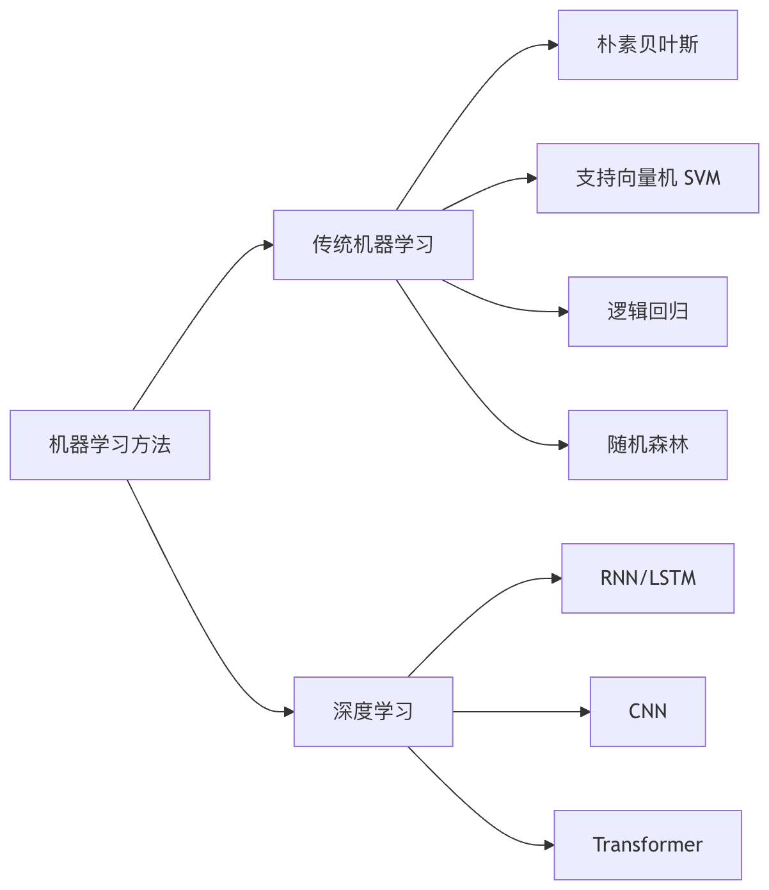

感情分析
感情分析（Sentiment Analysis）は、自然言語処理（NLP）分野において最も古典的で、かつ最も広く応用されているタスクの一つです。計算技術を通じてテキスト内の主観的情報を自動的に識別・抽出・分析し、筆者が特定のテーマ、製品、またはサービスに対して肯定的、否定的、あるいは中立的な態度を持っているかを判断します。
感情分析の基本タイプ
分析粒度による分類
- 文書レベル感情分析：文書全体を一つのまとまりとして感情傾向を判断する
- 文レベル感情分析：個々の文の感情極性を分析する
- アスペクト別感情分析：テキスト内で言及された特定のアスペクトに対して感情判断を行う
感情次元による分類
- 二値分類：肯定的/否定的
- 三値分類：肯定的/中立的/否定的
- 多クラス分類：より細かい粒度の感情分類（例：怒り、喜び、悲しみなど）
- 感情強度分析：感情の強さを定量化する
辞書ベースの感情分析方法
辞書ベースの手法は最も伝統的な感情分析技術であり、主に事前に構築された感情辞書に依存します。
コアコンポーネント
感情辞書：感情極性と強度を持つ単語の集合で構成される
- 一般的な英語辞書：SentiWordNet、AFINN、VADER
- 一般的な中国語辞書：知网HowNet感情辞書、大連理工大学感情語彙オントロジー
強度調整器：程度副詞と否定語の影響を処理する
- 程度副詞：非常に(1.5)、とても(1.3)、少し(0.8)など
- 否定語：〜ない、〜ではない、決して〜ないなど
基本ワークフロー
実例
# 疑似コード例：辞書ベースの感情分析
def lexicon_based_sentiment(text):
sentiment_score = 0
words = tokenize(text) # トークン化
for word in words:
if word in positive_lexicon:
sentiment_score += positive_lexicon[word]
elif word in negative_lexicon:
sentiment_score -= negative_lexicon[word]
# 否定と程度修飾の処理
sentiment_score = apply_negation(words, sentiment_score)
sentiment_score = apply_intensifier(words, sentiment_score)
return normalize(sentiment_score)
def lexicon_based_sentiment(text):
sentiment_score = 0
words = tokenize(text) # トークン化
for word in words:
if word in positive_lexicon:
sentiment_score += positive_lexicon[word]
elif word in negative_lexicon:
sentiment_score -= negative_lexicon[word]
# 否定と程度修飾の処理
sentiment_score = apply_negation(words, sentiment_score)
sentiment_score = apply_intensifier(words, sentiment_score)
return normalize(sentiment_score)
長所と短所の分析
長所：
- 学習データが不要
- 計算効率が高い
- 説明可能性が高い
短所：
- 複雑な言語現象（皮肉、反語など）の処理が難しい
- 辞書のカバレッジと品質に依存する
- 文脈の意味を捉えることができない
機械学習ベースの感情分析方法
機械学習手法は、ラベル付きデータからパターンを学習して感情分析を行います。
代表的な特徴エンジニアリング
- バッグ・オブ・ワーズ（BOW）：テキストを単語出現頻度のベクトルとして表現する
- TF-IDF：文書内での単語の重要度を考慮する
- N-gram特徴：局所的な単語列パターンを捉える
- 感情辞書特徴：辞書手法の利点を組み合わせる
一般的なアルゴリズム

コード例：Scikit-learnを使用した感情分類の実装
実例
from sklearn.feature_extraction.text import TfidfVectorizer
from sklearn.svm import LinearSVC
from sklearn.pipeline import Pipeline
# 分類パイプラインの構築
sentiment_clf = Pipeline([
('tfidf', TfidfVectorizer(ngram_range=(1, 2))),
('clf', LinearSVC())
])
# モデルの学習
sentiment_clf.fit(train_texts, train_labels)
# 新しいテキストの予測
prediction = sentiment_clf.predict([「この製品はとても使いやすく、強くおすすめします！」])
print(prediction) # 出力: 'positive'
from sklearn.svm import LinearSVC
from sklearn.pipeline import Pipeline
# 分類パイプラインの構築
sentiment_clf = Pipeline([
('tfidf', TfidfVectorizer(ngram_range=(1, 2))),
('clf', LinearSVC())
])
# モデルの学習
sentiment_clf.fit(train_texts, train_labels)
# 新しいテキストの予測
prediction = sentiment_clf.predict([「この製品はとても使いやすく、強くおすすめします！」])
print(prediction) # 出力: 'positive'
細粒度感情分析
細粒度感情分析（Aspect-Based Sentiment Analysis, ABSA）は、より高度な感情分析タスクであり、テキスト内で言及された特定のアスペクトとそれに対応する感情を識別することを目的としています。
ABSAのコアサブタスク
アスペクト抽出：テキスト内で議論されているエンティティや属性を識別する
- 明示的アスペクト：「スマートフォンのバッテリー持ちがとても良い」→「バッテリー」
- 暗黙的アスペクト：「撮影した写真がとても鮮明だ」→「カメラ」
感情分類：識別された各アスペクトに対して感情判断を行う
実装方法の比較
| 手法タイプ | 代表モデル | 適用シーン | 長所 | 短所 |
|---|---|---|---|---|
| パイプライン手法 | まずCRFでアスペクトを抽出し、次に分類器で感情を判断する | リソースが限られたシーン | モジュールが明確で、デバッグが容易 | 誤差の伝播 |
| エンドツーエンド手法 | BERT-ABSA、AOA-LSTM | 高精度が求められる場合 | 共同最適化により、性能が向上する | より多くのデータが必要 |
| マルチタスク学習 | MT-DNN、Multi-Task BERT | 関連タスクの補助 | 知識の共有 | タスク間のバランスが難しい |
コード例：BERTベースのアスペクト別感情分析
実例
from transformers import BertTokenizer, BertForSequenceClassification
import torch
# 事前学習済みモデルのロード
model = BertForSequenceClassification.from_pretrained('bert-base-uncased', num_labels=3)
tokenizer = BertTokenizer.from_pretrained('bert-base-uncased')
# 入力の準備
text = 「レストランの雰囲気は素晴らしいが、サービスが遅すぎる。」
aspect = 「サービス」
inputs = tokenizer(f"[CLS] {aspect} [SEP] {text} [SEP]", return_tensors="pt")
# 感情の予測
outputs = model(**inputs)
predictions = torch.argmax(outputs.logits, dim=1)
print(predictions) # 出力例: 1（否定的）
import torch
# 事前学習済みモデルのロード
model = BertForSequenceClassification.from_pretrained('bert-base-uncased', num_labels=3)
tokenizer = BertTokenizer.from_pretrained('bert-base-uncased')
# 入力の準備
text = 「レストランの雰囲気は素晴らしいが、サービスが遅すぎる。」
aspect = 「サービス」
inputs = tokenizer(f"[CLS] {aspect} [SEP] {text} [SEP]", return_tensors="pt")
# 感情の予測
outputs = model(**inputs)
predictions = torch.argmax(outputs.logits, dim=1)
print(predictions) # 出力例: 1（否定的）
感情分析の課題と発展の方向性
現在の主な課題
- 文脈依存性：同じ単語でも異なる文脈では異なる感情を持つ場合がある
- ドメイン適応性：あるドメインで学習したモデルは他のドメインでは性能が低下する
- 多言語処理：言語によって感情表現の仕方は大きく異なる
- 皮肉と反語の検出：表面上の文字と実際の感情が反対の場合
最先端の発展方向
- マルチモーダル感情分析：テキスト、画像、音声など複数の情報を組み合わせる
- 言語横断型感情分析：言語間の共通性を活用して低リソース言語の性能を向上させる
- 感情原因抽出：感情を判断するだけでなく、その原因も分析する
- パーソナライズ化された感情分析：ユーザーの個人的な特徴や履歴行動を考慮する
実践演習
演習1：基本感情分析器の構築
- NLTKのVADER辞書を使用してシンプルな感情分析器を実装する
- 映画レビューのデータセットでその精度をテストする
演習2：異なる機械学習手法の比較
- ナイーブベイズ、SVM、ロジスティック回帰をそれぞれ使用して感情分類器を学習する
- 交差検証を使用してそれらの性能差を比較する
演習3：アスペクト別感情分析の実践
- 事前学習済みBERTモデルをSemEval 2014レストランレビューデータセットでファインチューニングする
- アスペクト抽出と感情判断を同時に行えるエンドツーエンドシステムを実装する
本記事の学習を通じて、感情分析の基本概念、主要な手法、実装技術を習得できたはずです。感情分析はNLPの基礎タスクとして、その技術は絶えず発展しており、製品レビュー分析からソーシャルメディア監視まで、実際の応用において幅広い価値を発揮しています。
その他の拡張